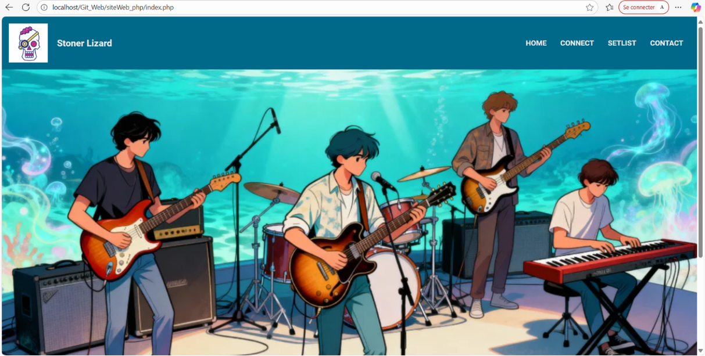

01
Site Web en PHP
Site web dynamique codé sous PHP, JavaScript, HTML/CSS et MySQL dans le cadre de ma formation informatique. Ce projet m’a donné l’occasion de mettre en pratique le développement web côté serveur, la gestion d’un système de base de données et l’intégration front-end. Le site permet notamment la gestion et l’affichage d’une setlist musicale, de réaliser des recherches dynamique et d’offrir une interface interactive avec un système de connexion.